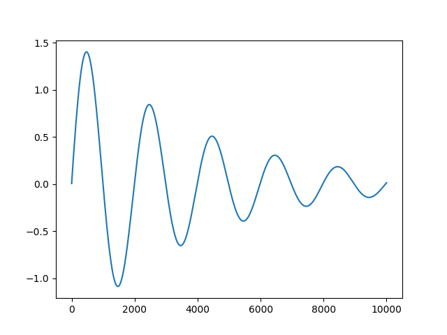

Fly!
Music of the chapter: Space Oddity - By David Bowie
The Software-Engineer's world of unknowns!
Throughout my career in software-engineering, I have always had avoided engineering-activities which involved any interactions with the Physical world (Except a short period of time when I was working on line-following robots as a high-school student). That's partly because I live in an economically poor country, where modern industries are nearly non-existent and you can't find a lot of companies building cyber-physical systems (Systems composed of a software, controlling/sensing a physical thing), except when politics is involved, if you know what I mean.
Unlike pure software engineering, where you can never run out of characters, building software that interacts with the real-world, involves physical objects, things that you can touch and feel, and the unfortunate truth about non-imaginary objects is that, they cost money, and they can break, which means, you can't experiment as much as a software with them (Unless you are a rich engineer, having a giant laboratory inside your house, with plenty of money)
I have never been that rich, and I also couldn't find any company doing respectful cyberphysical projects in my country either. Therefore I have never had the opportunity to unleash my passion for classical fields of engineering, in which you have to actually build something that can be touched. You can see throughout this book that I'm a great fan of computer simulations though! This chapter is all about the mechanical/electrical world sorrounding us, and how computation can help us understand and control it better!
New is always better
I named this chapter of the book as "Fly", because flying is probably one of the most amazing and spiritual dreams of humans that has come to reality, and computers are one of the most important components of the flying-machines we have today. Humans could never land on moon without computers.
I would like to start this chapter by mentioning two of the most ambitious companies, created by the American multi-billionaire entrepreneur, Elon Musk (Good to know, he was initially a computer programmer!), at the time this book is written. Tesla and SpaceX, are companies that are producing cyberphysical products, one is building self-driving cars and the other is building rockets, aiming to make humans multi-planetary species.
When Elon Musk started those companies, it wasn't obvious at all that they'll become successful. Who could think that a private rocket-building company could beat the government funded NASA that once put humans on the moon? That's also true for Tesla, there were plenty of automobile companies with decades of experience, even in designing electric cars, but how did Tesla beat them all? Besides the reason that Elon himself is one of the most ambitious people of our time, which is enough for making a risky business successful, there is a more important reason why those two companies become insanely successful: It's much easier to experiment new stuff when your business is still small!
It's too risky for an already giant business to switch and explore new ways of building things. When companies grow, they start to become heavily beurocratical, which slows things down by a lot. That also makes sense, because, as your business grows, taking giant risks will also become more dangerous. That's why startups are so fast, they are small, and there is plenty of room for making mistakes. SpaceX didn't have all those boring stuff, it only had a few bright-minded people, exploring new ways of building rockets, without being scared too much of the failures.
My point is, old technology isn't always taking the best approach in doing stuff, in fact, old technology is pretty bad, because when engineers were designing the old technology, they didn't have the knowledge and experience they have right now. So it makes sense a lot to get brave and try to redesign things that were working correctly and stabely even for a long time! (This is also true for our today's software standards, just imagine how would we design our OS and networking infrastructures if we could throw away something as sacred as UNIX or TCP/IP!)
Life in a Newtonian world
Building and experimenting cyber-physical systems is going to cost you a lot, and it makes sense to check if everything is going to work as expected, before building your prototype. Since your brand-new cars/airplanes/rockets/etc are going to live in our world, they are going to obey the laws of Physics of our world. So if you are willing to simulate them before doing serious experiments, you will have to apply the laws of physics on them, in a simulated environment.
Physics before apple hit the the Newton's head
Students nag that they would have much less to study if that damn apple never hit Newton's head, but the truth is, the science of Physics existed even before Newton formulate it in his precious works. Even if Newton never figured gravity, sooner or later, someone else would do it! So, what were the statements of "Physicists" before Newton, when you asked them to explain the mechanical phenomena we experience everyday?
Aristotle, the Greek scientist and philosopher who were living in 4th century B.C., was of the first famous scientists trying to explain the laws of motion. Surprisingly, Aristotle's laws of motion was left untouched and continued to rule physics for more than 2000 years. Galileo Galilei, the Italian polymath, was of the first people who was brave enough to make new statements about motion and to break the Aristotle's empire that ruled for so long.
Aristotle's law of motion states that:
- External forces are needed to keep an object moving
Although this statement seems funny and so wrong nowadays (It's the friction that stops objects moving), it was convincing people and scientists for more than two centuries! Put yourself in the shoes of people back then, how would you formulate physics, if you had never heard the laws of physics written by Newton?
Another remark of Aristotle's law of motion is that, heavier objects fall faster than light objects. Nowadays we know that's not the case too, and the reason a feather falls slower than a book is merely because of air friction.
Although Aristotle's opinion seem right, they are not right. Aristotle's biggest mistake is that, he wasn't aware of friction forces and he was ignoring air resistance. This is known as the Aristotle's Fallacy.
Galielo Galilei's law of inertia states that:
- If you put an object in the state of motion, it will move forever if no external forces are applied on it
And lastly we will reach to Newton's formulation of motion and gravity, which although is proven to be incorrect by legends like Albert Einstein, is still accurate enough to explain and predict most of the macroscopic motions happening in our universe. The physics of motions discovered by Newton is still a fundamental guide for us to build cars, airplanes and rockets that can bring humans on the moon and put satellites in the space.
Newton was a legend. Not only he discovered a very accurate theory for motion, he also invented (Co-invented?) a fresh mathematical tool that has made significant contributions to the other fields of science too. This field of mathermatics is known as Calculus. We explained the basica of differentiation and integration in the previous chapters, so let's jump to the Newton's laws:
[TODO]
Perhaps the most important discovery of Newton is his famous formula \(F=ma\) which explains how the force applied to an object, the mass and its acceleration are related to each other.
\(v=\frac{dx}{dt}\)
\(a=\frac{dv}{dt}\)
\(x=\int{\int{a.dt}}=\frac{1}{2}at^2+v_0t+x_0\)
I recall once I was watching a science-fiction movie, in which an astronaut lost his rope handle and started to slowly get attracted by a planet nearby. His friends tried to save him but he was already too far from them, practically impossible for them to save him. His nuzzles (They are connected to an astronaut dress, allowing them to move in the space, where friction is not present) were also out of fuel, so he couldn't fight gravitation in any way, and he knew it. He knew his destiny and the fact that he is soon going to fall into the planet with a freaking high speed and die with pain.
He said goodbye to his friends, and commited suicide by removing his helmet.
Perhaps the most exciting outcome of Newton's formulation of gravity, is its explanation of why moon doesn't fall on the earth. This question was always a mystery, but Newton's discovery made it look very obvious!
Just like how we learnt everything in this book, a good way to understand the concept could be yet another computer simulation!
Here we are going to build a program, which can simulate a system of planets, purely by applying Newton's gravity forces on each of them. We will see if we can have an "orbiting" behavior by just letting planets to attract each other.
Throughout our series of simulations in this chapter, we'll use the vector classes we defined in the 3rd chapter. Our simulations will be done in a 2D world, since it will be enough for understanding the concept. Adding the 3rd dimension could be an optional feature which you can implement later!
Let's get to the keyboard! Surprisingly, there are only two formula you'll need to use in order to predict the movement of masses in the space:
- Law of gravity: how strong objects attract each other, given their masses and distance between them?
- \(\vec{F}=m\vec{a}\): the acceleration an object gets when a force is applied.
We first need a model of an object in space. Let's call it a Planet (A moon is not technically not a planet, but let's call all space objects in our simulation as Planets for simplicity).
A planet has a position in our 2D spcae. It also has a mass. Given the law of intertia, we can claim that, the velocity of the planet, is indeed an important property of the planet which doesn't change over time (Unless forces are applied to it) so, our model of a planet can be described as a Python class:
class Planet:
def __init__(self, position, velocity, mass):
self.position = poistion
self.velocity = velocity
self.mass = mass
Assuming there are no gravitational forces yet, they would continue moving on a straight line according to their velocity. Let's update the position of the planets in a loop in intervals of dt seconds:
planets = [Planet(...)]
dt = 0.001
t = 0
for p in planets:
p.position += p.velocity * dt
t += dt
You can also 2D render the planets as filled circles on your screen. They'll be moving on straight lines as expected!
Now let's apply gravity forces and make this more interesting. An important thing you should be aware of is that when you put 2 (Or more) planets near each other, they will both start attracting each other at the same time. You can't calculate the forces applied on \(p_1\), update its position, and then go for \(p_2\), because when you change \(p_1\)'s position, the force applied on \(p_2\) will be different, compared to when the position was not updated. In fact, the state-change of \(p_2\) is only dependent on the old/original state of \(p_1\), not the new calculated one. If you don't consider this, your simulatation will get slightly inaccurate. What you have to do is to first calculate all the forces applied to each planet (Without changing their positions), and then apply the side-effects (Positional changes) instantiously:
[TODO]
Remember I mentioned we are aiming to land a man on the moon? I wasn't kidding. Our solar system simulator could be a nice environment for experimenting a rocket launch that want to reach and land on the moon.
There will be many challenges:
- Our fuel will be limited.
- Escaping the source-planet's gravity is not easy.
- We can't expect the target planet to be in its initial position after launching.
- The rocket is launched with an initial velocity due to the source planets rotation.
- etc
Exciting Electronics
I started to admire the joy of programming computer in very young ages, but even before that, I was a fan of toy electorical kits. I used to buy ans solder them back then. I always wanted to know how the circuit of a blinking LED works for example. Why? Because understanding them was the first step to my dream of designing the circuits of my own. Unfortunately, I couldn't find appropriate resources that could convince a kid why a circuit like that works, and how he can get creative and build circuits of his own, by putting the right components in the right places.
So, electronics, and the way it works, remained a secret to me for years, and one of the reasons I gave up and switched my focus on building software was that, computer programming is much easier. Even after 15 years, and multiple tries in reading different books on electronics, I'm still afraid to say that I'm still not capable of designing a circuit as simple as a blinker all by myself, without cheating from other circuits, and that's one of the reasons I decided to write this chapter; to finally break the curse and learn this complciated, yet fascinating field of science.
How did I do it? Well I tried reading books in this topic, but I didn't find many of them useful. All books written in this matter (Even the good ones!) were starting explaining the laws of electricity and then describing different electronical components and their usecases in separate chapters. I'm not really a fan of learning things this way.
Here, I'm going to explain electronic circuit design with a bottom-up approach (Just like the way we discussed other fields of computer science). We will start by learning the history of electricity and how was the first experience of humans of electricity, and then describing the ways we can generate electricty, and then we will try to build useful stuff out of electricity. (From things as simple as light bulbs to comptuer!)
Along the way, we will also learn about different electronic components!
I would say that studying electricity is one of the most important foundations of human modernity, and just like the history of mechanical physics, electricity also has its own fascinating stories.
[TODO]
Here is one of the reasons I don't like some of the electronics tutorials out there: they will tell you exactly, what a resistor is, how it works and why it works, but they'll never tell you when and where you should put a resistor in your circuit, and how you should calculate the resistance needed, in practical examples! E.g. by only knowing the Ohm's law \(V=RI\), calculate the resistance needed to connect a 2V LED to a 5V battery!
Here is the golden fact many resources do not directly tell you (Or do not emphasize as much as I'm going to do!), you can assume that any electronical component (Including LEDs) that consume electricity are acting like resistors (Even a piece of wire is a resistor). If they weren't resistors, they could consume infinite electrical current, even with very low voltages.
How to push the electrons?
Before jumping straight to the things you can do with electricity, it's good to know how electricity is generated. There are various ways you can get a steady stream of electrons in your circuit. Batteries for example, they give you a potential difference on their poles using chemical reactions, and unfortunately, they will run out of energy after sometime. Unlike batteries, the source of electricity we get in our homes isn't generated by chemical reactions, but is the result of spinning a magnet inside a coil of wire. You can try it yourself at home! Humans have discovered somehow that, if you move/spin a magnet inside a wire coil, you will push the electrons in the wire and will have electrical current, which is able to turn a light-source on!
Now, you don't need to spin that magnet by hand, you can let the nature do it for you. You can connect a propeller to the magnet, causing it to spin when wind is blown. That's in fact how wind turbines convert wind into electricity!
Even if you don't have wind, you can use artificially-generated wind (By burning fuel or even doing nuclear reaction, to make water hot and vapourize it, leading to a high-pressure steam of water vapour) to spin the coil for you.
Unfortunately, the voltage/current generated using this technique alternates like a sine function, and although we can still directly use such a current for heating things (E.g light-bulbs), it can't be used for driving anything digital. Such a power supply is known as an AC supply (AC stants for, alternating current!)
If you plot the output voltage of the two ends of a AC power source, you will get something like this (Negative voltage means that the poles are reversed and the current will flow in the reversed direction):
[TODO]
The best thing we can do right now is to try to limit the voltage/current to only one direction (Our digital circuits may handle frequent drops and increases in the input voltage, but they may not tolerate when the voltage/current is completely reversed).
There is an electronic component, named Diode, which allows the flow of electrons in a single direction. Let's not bother ourselves on how/why it works, but instead, focus on its application and see if we can use it for something practical, such as converting an AC voltage to a DC one.
By connecting a diode to a AC source, we will get an output like this:
[TODO]
Although it's a good step towards our goal, you can see that half of the energy is being unused. Now let's reverse the direction of the diode and see what happens:
[TODO]
Is there any way we can add these two signals to get an output like this?
[TODO]
Before reading the answer, try to design such a circuit yourself! (Hint: you will need 4 diodes) You will probably reach to a circuit like this:
These specific combination of diodes is called a "bridge", and although it looks different from what we drew, it actually is the same!
So far, we have been able to allow an AC voltage to flow on only a single direction, but the output voltage we are getting is not yet stable. It alternates between 0 and the voltage of the AC supply. Is there any way we can convert an unstable/alternating DC to a stable one? If you look closed to the output voltage, you will see that there are "gaps" in the voltage that need to be filled. It would be good of there was an electronic component that could temporarily store the unused voltage of an alternating DC and release an smoother voltage when the energy is actually being consumed. Fortunately, there is such a component! It is called a "capacitor" and is able to store the energy for you like a battery.
The output voltage is not much better and smoother than the version without a capacitor. Though it's still not completely flat, as you can still see some gaps in the voltage, but it still is much better than the previous version!
In case you use capacitors with higher capacitance (The unit used for capactitors is Farad), the capacitor will be able to store more energy in it, and keep the voltage up for you for a longer time, leading to smaller gaps.
You just saw that capacitors have obvious use cases, here we used them as a temporary storage of energy, in order to fill the voltage gaps in the process of converting an AC voltage to a DC one, but they have other usecases too! Before examining them, let's get a deeper undestanding on what a capacitor is and how it is made!
Capacitors are simple two conductor plates that are very close to each other (You can see that from the symbol of a capacitor too!). They are very close, but not connected! If you connect a voltage source to a capacitor, you might think that no current will flow (As the plates are not connected to each other), but surprisingly, current will flow! The voltage source will slowly grab electrons from one side and put it on the other side of the plate, effectively making a potential difference between the plates. The process will eventually make the potential difference between the plates equal with the potential difference of the voltage source, and after that, the battery and capacitor will cancel each other and current will stop flowing! The capacitor is charged!
If you plot the current flowing in a circuit containing a battery to a capacitor, you will see that in the very first moment, the capacitor will act like a wire, it allows the current as if there is no capacitor, and as time passes, the potential difference between the plates will slowly increase, slowly cancelling out the potential difference of the battery, leading to less and less current flowing, and finally, the current will completely stop flowing!
There is one very important fact when analyzing capacitors: analyzing them is not possible if you do not assume there is a resistor in the way! Even wires have some amount of resistance, so you may never find a capacitor connected to a battery wihtout a resistor in between! In fact, such a circuit is meaningless, as it does not exist:
Now what happens if the resistance of the resistor along the way increases? The capacitor will get charged/discharged with higher delay! You can either increase the resistor in the way, or the capacity of the capacitor itself, in order to make this charging/discharging delay higher. So the amount of time needed for a pair of resistor and capacitor getting charged is directly proportional to both the resistance and capacitance of the components, and that's why we refer pairs of resistors and capacitors as RC circuits!
We saw that capacitors can also help you to have some kind of "delayed" voltage source, which can sometimes become handy. As an example, imagine you want to turn an LED on, with a delay. If you connect the LED directly to the pins of the capacitor, the LED will slowly become bright and brighter, until the capacitor is fully charged. Here, although the LED got its maximum brightness with a delay, it isn't exactly what we wanted. We want the LED to stay off for some time, and then suddenly become lit!.
Revisting transistors
Remember transistors we discussed in the first chapter? Transistors might come handy here! A transistor is a electrically controlled switch. It has a "base" pin, that when become enough voltage to pass a threshold, will suddenly allow current to flow between in emitter an collector wire. Now let's connect the delayed voltage-source we made out of a resistor-capacitor, to the base pin of a transistor. The delayed voltage will eventually reach the transistor's threshold and then will suddenly turn the LED on!
Breaking the curse
Ok, we just saw four of the most useful electronical components so far, and we also saw some of the very obvious usecases of these components. Now it's a good time to explore the "Hello World!" circuit of the world of electronics! A Astable Vibrator!
While the name of this circuit seems scary, the circuit itself doesn't do anything extraordinary. It's basically a 2 LED blinker! Unfortunately, although the circuit does such a simple thing, it's surprisingly complicated for those just started to learn electronics! You have to have a very accurate understanding of resistors, capacitors and transistors in order to understand how a Astable Vibrator. Fortunately, since we now understand how we can turn an LED on with a delay, it's not super hard to understand this new circuit.
Our approach in studying a blinker circuit is very similar with how we learned other things in this book. Instead of looking at a astable vibrator's circuit and trying to understand it, we will go through a bottom-up approach, and will try to build a blinker circuit from scratch, using our current knowledge!
Ohm and Kirchhoff's Laws
When analyzing circuits, there are two important laws in electricity that can help you to calculate the potential difference between any two points, or the amount of current flowing in any point, and these master laws are:
- The Ohm's law
- The Kirchhoff's law
The Ohm's law, as previously discussed, describes the relation between the voltage, resistance and current.
\(V=RI\)
The Kirchhoff's law on the other hand, states that the sum of incoming and outgoing current to/from a point in a circuit is always equal. Assuming that we state an outgoing current as an incoming current that is negative, we can define Kirchhoff's current law: the algebraic sum of currents that meet at a point is zero.
Now let's see how these laws can help us analyze a circuit.
Analyzing circuits
Analyzing an electronic circuit is all about predicting and calculating the amount of current and voltage of every point in the circuiy. Obviously, the voltage of every two points directly connected through a wire is always equal. Electronic components are connected together through wires, and your circuit consists of junctions where 2 or more components meet. Since the voltage value of all the points in a junction are equal, there is only one voltage to be calculated. Let's refer to this intersection points of components as nodes. In the example circuit in figure X, there are X nodes. Our goal is to calculate the voltage of all the nodes in any given time.
An electronic component can be defined by the amount of current it allows to pass given the voltages applied on its pins. For example, a resistor's ability to pass electrons is linearly dependent to the amount of voltage difference applied on its pins.
\(i=\frac{V_a - V_b}{R}\)
There are components that have non-linear behaviors too! For example, a diode has a exponential behavior. The more voltage difference applied in correct direction, it allows exponentially more current to pass, and apply the voltage difference in reverse direction, and it will become like a resistor with infinite resistance.
\(i=ae^{b(V_a - V_b)}\)
(The coefficients \(a\) and \(b\) depends on the diode)
There are also some electronic components with time-dependent behaviors. Their current output depends on the input applied to them in the past too. A capactitor for example. If the capacitor is already charged, it allows no current, while an uncharged capacitor allows infinite current. We can also define a capacitor's behavior through a formula:
\(i=C\frac{d(V_a-V_b)}{dt}\)
I would like to introduce you a new, imaginary source of electricity, referred as a current source. As opposed to voltage sources which try to keep the potential difference between two points on a specific number, current sources try to keep the current stable on a chosen number. Current sources are imaginary and do not exist in the real world. You can somehow emulate them though! Imagine building a "smart" voltage source that can measure the current and increase/decrease its voltage accordingly to keep the current on a specific number. As opposed to a voltage source where short circuits are not permitted, in current sources, you have to make sure that electrons coming out of the source will eventualy get back to the source. Otherwise, the zeroness of current will cause the ovltage to become infinity which definitely is not what we want!
The reason I'm introducing current sources is that, it's much easier to analyze circuits that use current-sources instead of voltage sources (For now!).
\(i = I\)
By summing all of currents flowing into each node, we will get a set of equations. Given Kirchhoff's law, we know that these functions must be equal to zero. This puts a constraint on the voltages of the nodes in out system, helping us to find the correct voltage of each node.
In other words, the problem of solving the circuit is reduced to finding the solution of a system of equations.
Newton, Newton everywhere!
Finding the roots of arbitrary functions has always been an interesting problem for ancient mathematicians. It's interesting to know that it took almost X years to find a general method for calculating the roots of a simple quadratic equation, let alone more complicated function!
Newton, besides doing Physics, has always been a pioneer in mathematics and one of his discoveries, was a numerical method for finding the roots of any arbitrary function (With known derivative). The method, which is known as Newton-Raphson nowadays (Thanks to the simplification Raphson did to the algorithm), is an iterative algorithm which tries to guess the root of the function, and make its guess better and better through iterations, until reaching to a final answer! Yes, Newton was doing machine-learning in 1600s, what a legend!
\(x_{n+1} = x_n - \frac{f(x_n)}{f'(x_n)}\)
Here is a Python code that tries to find the root of simple single-input/single-output function through this method:
\(f(x) = x^3 - 4x^2 - x + 5\)
\(f'(x) = 3x^2 - 8x - 1\)
def f(x):
return x**3 - 4 * x**2 - x + 5
def f_prime(x):
return 3 * x**2 - 8 * x - 1
guess = 0.5
for _ in range(10):
guess = guess - f(guess) / f_prime(guess)
print(guess, f(guess))
And the output is: 1.16296185677753 0.0
Fortunately, a very similar approach can be applied for finding the root of a multi-input/multi-output function. (Here, a electronic circuit can be mapped into a multi-input/multi-output function, where the inputs are voltages of the nodes, and the outputs are the sum of currents flowing into the nodes)
The derivative of a multi-input/multi-output function is known as the Jacobian of that function. We have been working with Jacobians while training neural-networks too!
Assuming that our function accepts \(3\) inputs and gives out \(3\) outputs, the Jacobian of that function will be a \(3 \times 3\) matrix:
\[F'(X) = \begin{bmatrix} \frac{\partial f_0(X)}{\partial x_0} & \frac{\partial f_0(X)}{\partial x_1} & \frac{\partial f_0(X)}{\partial x_2} \\ \frac{\partial f_1(X)}{\partial x_0} & \frac{\partial f_1(X)}{\partial x_1} & \frac{\partial f_1(X)}{\partial x_2} \\ \frac{\partial f_2(X)}{\partial x_0} & \frac{\partial f_2(X)}{\partial x_1} & \frac{\partial f_2(X)}{\partial x_2} \end{bmatrix}\]
Where: \(X = (x_0, x_1, x_2)\) and \(F(X) = (f_0(X), f_1(X), f_2(X))\)
In the Newton Raphson method, in each iteration, we were dividing the result of the function at previous guess, by the result of the derivative of the function at that guess. Since the derivative of our function is now a matrix, we have to find the inverse of the Jacobian matrix in order to perform the formula. The iteration formula becomes:
\[X_{n+1} = X_n - F'(X_n)^{-1}.F(X_n)\]
Now, the only remaining challenge is coverting a circuit to a multi-input/multi-output function, and then, by finding the root of that function through the Newton-Raphson method, the circuit is solved!
Let's dive into the implementation:
[TODO]
Let's assume we have \(n\) nodes. Applying the Kirchhoff's law will give us \(n\) equations that need to be zeroed (See the number of inputs and outputs in our multi-input/multi-output function is equal).
Each function is in fact the sum of contribution of different components connected to it. So a first step could be creating a framework in which components may add their contributions to the node functions.
Let's assume each function is represented as a sum of sub-functions (If there are \(k\) components connected to the \(i\)th node, the corresponding node function will be the sum of \(k\) sub-functions: \(f_i(X) = f_{i,0}(X) + f_{i,1}(X) + \dots + f_{i,k-1}(X)\))
Since the nodes are simple variables that need to be calculated by a solver, it might make more sense to instantiate Var instances when introducing new nodes.
class Var:
def __init__(self, index):
self.index = index # Keep track of the index of variable
self.old_value = 0
self.value = 0
Circuits
class Circuit:
def __init__(self):
self.gnd = Var(None)
self.vars = []
self.components = []
def new_var(self) -> Var:
n = Var(len(self.vars))
self.vars.append(n)
return n
def new_component(self, comp: Component):
self.components.append(comp)
def solver(self, dt) -> Solver:
solver = Solver(self.vars, dt)
for comp in self.components:
comp.apply(solver)
return solver
Solver
class ConvergenceError(Exception):
pass
class Solver:
def __init__(self, variables, dt) -> None:
self.variables = variables
self.funcs = [list() for _ in range(len(variables))]
self.derivs = [dict() for _ in range(len(variables))]
self.dt = dt
self.t = 0
self.randomness = random.random() - 0.5
def add_func(self, ind, f):
if ind is not None:
self.funcs[ind].append(f)
def add_deriv(self, ind, by_ind, f):
if ind is not None:
if by_ind not in self.derivs[ind]:
self.derivs[ind][by_ind] = []
self.derivs[ind][by_ind].append(f)
def jacobian(self):
res = []
for f in range(len(self.funcs)):
row = []
for v in range(len(self.funcs)):
row.append(self.eval_deriv(f, v))
res.append(row)
return res
def eval(self, ind):
res = 0
for f in self.funcs[ind]:
res += f()
return res
def eval_deriv(self, ind, by_ind):
res = 0
if by_ind in self.derivs[ind]:
for f in self.derivs[ind][by_ind]:
res += f()
return res
def is_solved(self):
for i in range(len(self.funcs)):
if not numpy.allclose(self.eval(i), 0):
return False
return True
def step(self, max_iters=1000, max_tries=100, alpha=1):
solved = False
for _ in range(max_tries):
try:
iters = 0
while not solved:
x = [v.value for v in self.variables]
f_x = [self.eval(v.index) for v in self.variables]
f_prime_x = self.jacobian()
f_prime_x_inv = numpy.linalg.inv(f_prime_x)
x = x - alpha * numpy.dot(f_prime_x_inv, f_x)
for v in self.variables:
v.value = x[v.index]
solved = self.is_solved()
if iters >= max_iters:
raise ConvergenceError
iters += 1
except (OverflowError, ConvergenceError, numpy.linalg.LinAlgError):
# Start from another random solution
for v in self.variables:
v.value = random.random()
if solved:
for v in self.variables:
v.old_value = v.value
self.t += self.dt
self.randomness = random.random() - 0.5
return
raise ConvergenceError
Components are equations
class Component:
def __init__(self):
pass
def apply(self, solver: Solver):
raise NotImplemented
Current Source
A current-source equation makes sure that the amount of current flowing through its pins is equal with some value, through two equations:
- \(I_a - i = 0\)
- \(i - I_b = 0\)
class CurrentSource(Component):
def __init__(self, amps, a: Var, b: Var):
super().__init__()
self.amps = amps
self.a = a
self.b = b
def apply(self, solver: Solver):
solver.add_func(self.a.index, lambda: self.amps)
solver.add_func(self.b.index, lambda: -self.amps)
Voltage Source
A voltage-source equation makes sure the potential difference between two points \(V_a\) and \(V_b\) is always equal with \(v\), by adding 3 equations to your system. (A temporary variable \(i\) is also introduced, representing the amount of current being flown through the component):
- \(I_a - i = 0\)
- \(i - I_b = 0\)
- \(V_a - V_b - v = 0\)
Note that, since we are using the Kirchhoff's law to solve the circuits, all components need to define the amount of current going in and out the circuit, and how does it relate \(I_a\) and \(I_b\) with each other. In a voltage-source (Like any other 2-pin component), the amount if input current is equal with the amount of output current. Naming that auxillary variable to \(i\), the relation between \(I_a\) and \(I_b\) is defined using the first and second equation. In fact, the variable \(i\) has no direct usage but to relate \(I_a\) and \(I_b\) with each other!
class VoltageSource(Component):
def __init__(self, volts, a: Var, b: Var, i: Var):
super().__init__()
self.volts = volts
self.a = a
self.b = b
self.i = i
def apply(self, solver: Solver):
solver.add_func(self.a.index, lambda: self.i.value)
solver.add_func(self.b.index, lambda: -self.i.value)
solver.add_func(
self.i.index,
lambda: self.b.value
- self.a.value
- self.volts,
)
solver.add_deriv(self.a.index, self.i.index, lambda: 1)
solver.add_deriv(self.b.index, self.i.index, lambda: -1)
solver.add_deriv(self.i.index, self.a.index, lambda: -1)
solver.add_deriv(self.i.index, self.b.index, lambda: 1)
Resistor
The resistor component makes sure that the amount of current being flown through it is linearly dependent on the voltage-difference applied to it. In other words: \(i = \frac{V_a - V_b}{R}\). It does so by applying two equations:
- \(I_a - \frac{V_a - V_b}{R} = 0\)
- \(\frac{V_a - V_b}{R} - I_b = 0\)
class Resistor(Component):
def __init__(self, ohms, a: Var, b: Var):
super().__init__()
self.ohms = ohms
self.a = a
self.b = b
def apply(self, solver: Solver):
solver.add_func(self.a.index, lambda: (self.a.value - self.b.value) / self.ohms)
solver.add_func(self.b.index, lambda: (self.b.value - self.a.value) / self.ohms)
solver.add_deriv(self.a.index, self.a.index, lambda: 1 / self.ohms)
solver.add_deriv(self.a.index, self.b.index, lambda: -1 / self.ohms)
solver.add_deriv(self.b.index, self.a.index, lambda: -1 / self.ohms)
solver.add_deriv(self.b.index, self.b.index, lambda: 1 / self.ohms)
Capacitor
Unlike the components discussed so-far, a capacitor is a component that has memory (Its current behavior is dependent on voltages previously applied to it). A charged capacitor has a different behavior compared to a discharged one. A charged capacitor will resist against current and a discharged one acts like a wire. We somehow need to bring this memory-behavior on the table. We do this by introducing a old_value field for our variables, and use them as equations. Note that the old values of variables act as constant numbers (When taking derivatives). I.e: \(\frac{d(V-V_{old}}{dt} = \frac{dV}{dt}\)
A capacitor can be modeled using 2 equations:
- \(I_a - \frac{(V_a + V_b)-(V_{a_{old}} + V_{b_{old}})}{dt} \times C = 0\)
- \(\frac{(V_a + V_b)-(V_{a_{old}} + V_{b_{old}})}{dt} \times C - I_b = 0\)
class Capacitor(Component):
def __init__(self, farads, a: Var, b: Var):
super().__init__()
self.farads = farads
self.a = a
self.b = b
def apply(self, solver: Solver):
solver.add_func(
self.a.index,
lambda: (
(self.a.value - self.b.value) - (self.a.old_value - self.b.old_value)
)
/ solver.dt
* self.farads,
)
solver.add_func(
self.b.index,
lambda: -(
(self.a.value - self.b.value) - (self.a.old_value - self.b.old_value)
)
/ solver.dt
* self.farads,
)
solver.add_deriv(self.a.index, self.a.index, lambda: self.farads / solver.dt)
solver.add_deriv(self.a.index, self.b.index, lambda: -self.farads / solver.dt)
solver.add_deriv(self.b.index, self.a.index, lambda: -self.farads / solver.dt)
solver.add_deriv(self.b.index, self.b.index, lambda: self.farads / solver.dt)
Inductor
class Inductor(Component):
def __init__(self, henries, a: Var, b: Var, i: Var):
super().__init__()
self.henries = henries
self.a = a
self.b = b
self.i = i
def apply(self, solver: Solver):
solver.add_func(self.a.index, lambda: self.i.value)
solver.add_func(self.b.index, lambda: -self.i.value)
solver.add_func(
self.i.index,
lambda: (self.i.value - self.i.old_value) / solver.dt * self.henries
- (self.a.value - self.b.value),
)
solver.add_deriv(self.a.index, self.i.index, lambda: 1)
solver.add_deriv(self.b.index, self.i.index, lambda: -1)
solver.add_deriv(self.i.index, self.i.index, lambda: self.henries / solver.dt)
solver.add_deriv(self.i.index, self.a.index, lambda: -1)
solver.add_deriv(self.i.index, self.b.index, lambda: 1)
Diode
Diode is a one-way current blocker. Apply the voltage on right direction and the current will go up to infinity (I.e zero resistance), and apply it in the reverse direction and the current becomes zero (I.e infinite resistance). Such a behavior can be perfectly modeled with a exponentation function.
class Diode(Component):
def __init__(self, coeff_in, coeff_out, a: Var, b: Var):
super().__init__()
self.coeff_in = coeff_in
self.coeff_out = coeff_out
self.a = a
self.b = b
def apply(self, solver: Solver):
solver.add_func(
self.a.index,
lambda: (math.exp((self.a.value - self.b.value) * self.coeff_in) - 1)
* self.coeff_out,
)
solver.add_func(
self.b.index,
lambda: -(math.exp((self.a.value - self.b.value) * self.coeff_in) - 1)
* self.coeff_out,
)
solver.add_deriv(
self.a.index,
self.a.index,
lambda: math.exp((self.a.value - self.b.value) * self.coeff_in)
* self.coeff_out
* self.coeff_in,
)
solver.add_deriv(
self.a.index,
self.b.index,
lambda: -math.exp((self.a.value - self.b.value) * self.coeff_in)
* self.coeff_out
* self.coeff_in,
)
solver.add_deriv(
self.b.index,
self.a.index,
lambda: -math.exp((self.a.value - self.b.value) * self.coeff_in)
* self.coeff_out
* self.coeff_in,
)
solver.add_deriv(
self.b.index,
self.b.index,
lambda: math.exp((self.a.value - self.b.value) * self.coeff_in)
* self.coeff_out
* self.coeff_in,
)
Transistor
class Bjt(Component):
def __init__(
self,
coeff_in,
coeff_out,
beta_r,
beta_f,
base: Var,
collector: Var,
emitter: Var,
):
super().__init__()
self.coeff_in = coeff_in
self.coeff_out = coeff_out
self.base = base
self.emitter = emitter
self.collector = collector
self.beta_r = beta_r
self.beta_f = beta_f
def apply(self, solver: Solver):
solver.add_func(
self.collector.index,
lambda: (
(
math.exp((self.base.value - self.emitter.value) * self.coeff_in)
- math.exp((self.base.value - self.collector.value) * self.coeff_in)
)
- (1 / self.beta_r)
* (
math.exp((self.base.value - self.collector.value) * self.coeff_in)
- 1
)
)
* self.coeff_out,
)
solver.add_func(
self.base.index,
lambda: (
(1 / self.beta_f)
* (math.exp((self.base.value - self.emitter.value) * self.coeff_in) - 1)
+ (1 / self.beta_r)
* (
math.exp((self.base.value - self.collector.value) * self.coeff_in)
- 1
)
)
* self.coeff_out,
)
solver.add_func(
self.emitter.index,
lambda: -(
(
math.exp((self.base.value - self.emitter.value) * self.coeff_in)
- math.exp((self.base.value - self.collector.value) * self.coeff_in)
)
+ (1 / self.beta_f)
* (math.exp((self.base.value - self.emitter.value) * self.coeff_in) - 1)
)
* self.coeff_out,
)
solver.add_deriv(
self.collector.index,
self.collector.index,
lambda: math.exp((self.base.value - self.collector.value) * self.coeff_in)
* self.coeff_out
* self.coeff_in
+ math.exp((self.base.value - self.collector.value) * self.coeff_in)
* self.coeff_out
* self.coeff_in
* (1 / self.beta_r),
)
solver.add_deriv(
self.collector.index,
self.base.index,
lambda: math.exp((self.base.value - self.emitter.value) * self.coeff_in)
* self.coeff_out
* self.coeff_in
- math.exp((self.base.value - self.collector.value) * self.coeff_in)
* self.coeff_out
* self.coeff_in
- math.exp((self.base.value - self.collector.value) * self.coeff_in)
* self.coeff_out
* self.coeff_in
* (1 / self.beta_r),
)
solver.add_deriv(
self.collector.index,
self.emitter.index,
lambda: -math.exp((self.base.value - self.emitter.value) * self.coeff_in)
* self.coeff_out
* self.coeff_in,
)
solver.add_deriv(
self.base.index,
self.collector.index,
lambda: -(1 / self.beta_r)
* math.exp((self.base.value - self.collector.value) * self.coeff_in)
* self.coeff_out
* self.coeff_in,
)
solver.add_deriv(
self.base.index,
self.base.index,
lambda: (1 / self.beta_f)
* math.exp((self.base.value - self.emitter.value) * self.coeff_in)
* self.coeff_out
* self.coeff_in
+ (1 / self.beta_r)
* math.exp((self.base.value - self.collector.value) * self.coeff_in)
* self.coeff_out
* self.coeff_in,
)
solver.add_deriv(
self.base.index,
self.emitter.index,
lambda: -(1 / self.beta_f)
* math.exp((self.base.value - self.emitter.value) * self.coeff_in)
* self.coeff_out
* self.coeff_in,
)
solver.add_deriv(
self.emitter.index,
self.collector.index,
lambda: -math.exp((self.base.value - self.collector.value) * self.coeff_in)
* self.coeff_out
* self.coeff_in,
)
solver.add_deriv(
self.emitter.index,
self.base.index,
lambda: -math.exp((self.base.value - self.emitter.value) * self.coeff_in)
* self.coeff_out
* self.coeff_in
+ math.exp((self.base.value - self.collector.value) * self.coeff_in)
* self.coeff_out
* self.coeff_in
- (1 / self.beta_f)
* math.exp((self.base.value - self.emitter.value) * self.coeff_in)
* self.coeff_out
* self.coeff_in,
)
solver.add_deriv(
self.emitter.index,
self.emitter.index,
lambda: math.exp((self.base.value - self.emitter.value) * self.coeff_in)
* self.coeff_out
* self.coeff_in
+ (1 / self.beta_f)
* math.exp((self.base.value - self.emitter.value) * self.coeff_in)
* self.coeff_out
* self.coeff_in,
)
When stables and unstables meet!
Revisiting capacitors, we know they are elements that resist against stability of the voltage applied to them. (E.g if you connect a DC voltage-source to them, they will slowly get charged and cancel out the voltage of the DC voltage source, resisting against flow of electrons)
On the other hand, inductors are components that resist against unstability of the current flowing in them. If you suddenly connect a voltage source to them, you may not see a sharp change in the current flowing in an inductor (As opposed to a capacitor, or even a simple resistor), but the current will go up slowly, and if you disconnect the voltage source, current will not get zero instantly, but it will slowly approach zero (Very similar to law of intertia in mechanics!)
In fact, both capacitors and inductors somehow store energy, but in different ways. A capacitor stores energy as a potential difference between its plates, but an inductor stores energy as a magnetic field inside a coil.
Both capacitors and inductors are kind of resistors. The capacitor's resistance is higher when the input voltage is stable (Infinite resistance on a DC voltage source and lower resistance in a AC voltage source or any form of alternationing voltages). On the other hand, an inductor's resistance is 0 when the voltage applied to it is stable, and it's resistance increases as it's input voltage source alternates faster (E.g a high-frequency AC voltage source)
In the circuit shown in figure X, if you apply DC voltages, the voltage of \(V_1\) in the circuit with capacitor will eventually become zero, while the voltage in the circuit with inductor will slowly increase and become \(V\). Now, replace the DC voltage source with a AC one and slowly increase its frequency, the situation will be reversed! You will see higher voltages in the capacitor circuit and lower voltages in the inductor circuit.
We can somehow claim that, capacitors are high-pass filters. They pass current better when their input alternates faster (I.e with higher frequency), whereas inductors are low-pass filters, since they allow better flow of electrons when the input signal is alternating slowly (Or no alternation at all).
Now, here is a fascinating idea: by combining a capacitor and an inductor together, we'll have a circuit that has minimum resistance in certain frequency! This magical frequency can be calculated using this formula:
\(f = \frac{1}{2 \pi \sqrt{LC}}\)
where \(C\) is the capacitor's capacitance in Farads and \(L\) is inductor's inductance in Henries.
Remember both capacitors and inductors could be used for storing energy? Not only you use a pair of capacitor and inductor for creating a dynamic resistor with minimized resistance in a certain frequency, but also you can trap energy in them, and that energy will oscillate between the capacitor and inductor with the same frequency! This means, you can build an alternating source of voltage with this magical pair, and that oscillation is something that has effects on the space around it. It makes disturbances that propagates in the space! (Recall the second chapter where we discussed waves)
The oscillation made by this loop can be routed to a long piece of metal, amplifying the impact it has in the space. A bigger surprise is that, if you have another capacitor-inductor loop (With same frequency) somewhere else, a slight oscillation will also be induced on the second loop. This revolutionary idea was first proposed by the German physicist, Heinrich Hertz.
{ width=300px }
Let's teleport
Now that we've been able to recognize presence of some frequency in the space through an antenna, a good next step might be to turn an LED one when the frequency is present. Unfortunately, as an electromagnetic wave propagates through the space (Assume the energy is on the surface of a sphere that is getting bigger linearly, the energy on the sphere is constant but the area is increasing, so the density of the energy per area will decrease, that's why a light-source will look less bright as you get farther from it), it loses its energy. So, the amplitude of the signal you receive on the other side is much smaller, so we have to somehow amplify it and retrieve the original, high-amplitude signal back, in order to make the signal large enough for turning an LED on.
What we are receiving in a RLC loop that is connected to an antenna, is a voltage resonance. This means that the loop will have a very small AC voltage when an electromagnetic wave (With the same frequency as the loop's resonant frequency) is present in the air. In order to turn an LED on, we need a DC voltage source. Remember how we were able to convert AC to DC in previous sections? Using the same ideas as before, we can limit the flow of current to a single direction with a diode, and fill the voltage gaps using a capacitor. This way, the presence of a wave is converted to a very small DC voltage source which can be detected, by a transistor! (Note: you might think that the capacitor will store the energy and keep it even when the signal is not present anymore, that is somehow true, but in practice, the output of the circuit is connected to some other element, consuming the energy stored in the capacitor, eventually zeroing the energy of the capacitor when the signal is not present anymore)
[IMG, rlc loop connected to a diode and capacitor]
The DC voltage source we receive from such a circuit is not enough at all for doing anything useful, but there is a powerful electronic component, transistor, which can detect a voltage as small as what you'll receive from a RLC loop, and let a much higher current flow from its collector to the emitter pin.
[IMG, RLC loop, with a transistor]
Transistors usually need a small, initial voltage on their base pin in order to get sensitive to voltage changes. (E.g the impact of increasing the voltage of the base pin from 1V to 1.1V is much higher than the impact of increasing it from 0V to 0.1V and that's because transistors allow exponentially more current to flow when their base voltage increase). So in order to make our circuit more sensitive to voltage changes, it might make sense to add some extra voltage to the base pin, using a pair of resistors (For voltage splitting).
[IMG: Biasing the transistor]
This simple can be used for sending binary data in distances, a morse-code for example!
Telephone revolution
Morse codes can be used for sending bit infomation. What if we want to send something like audio through space? Audio itself is a wave contatining many frequencies, and our circuit was able to recognize the presence of a wave with a certain frequency in the space.
Let's get back to our previous circuit. We were able to control the flow of electrons by a radio wave, but there is more to that circuit! By playing with our transmitter a bit, we will soon figure out that the more strong (Higher amplitude) the source signal is, the brighter the LED will get, which means, not only we can prevent/allow the flow of electrons, we can also control the amount of current flows per time! This means that the data we are sending through our transmitter doesn't necessarilly have to be single bits (On/offs), but they can also be floating-point values!
Waves themselves can be represented as streams of values, where each value shows the amplitude of the signal over time. Now, let's suppose the voice we are going to transfer is encoded as the strength of the retrieved signal. This kind of encoding is known as Amplitude Modulation or AM. This is exactly the same thing that happens in a AM radio receiver/transmitter, and our wave-recognizer circuit can actually receive AM signals already. If we connect the collector wire of the transistor to a speaker, you'll be able to hear the Amplitude Modulated sounds transmitted on that specific frequency. If we want to allow the user to listen to arbitrary frequencies, we'll need a RLC loop with variable resonant-frequency. The resonant-frequency can become variable if either the capacitor or the inductor becomes variable. A variable inductor is pretty straightforward: since an inductor is a wire coil, you can select how long of the coil you want to use in the circuit, as shown in the figure X.
[IMG: AM radio receiver]
[IMG: variable coil]
So far we have been able to detect signals and we didn't discussed much on how we can generate those signals. One easy way of generating such a signal is to charge a RLC loop with a voltage source and then disconnect it (You won't have alternations if you keep the voltage-source connected forever), so that the energy can swing in it. Unfortunately, the signal generated using this method is not a steady one and needs someone/something persistently connecting/disconnecting the voltage source to/from the RLC loop, otherwise the swing will not happen!
We have to think of a circuit which is able to oscillate for us forever, without needing someone to connect/disconnect the voltage-source, or at-least make the process automated. An example of such a circuit is the Astable Multivibrator circuit we discussed in the previous sections. An astable multivibrator generates a square-wave instead of a sine-wave, but that's ok! You can still detect the oscillations of an Astable Multivibrators in the space. In fact, if you take the FFT of a square-wave, you will see that the a sine wave of frequency \(f\) is presented in a square-wave of frequency \(f\), and the only problem is that, there are also other signals present. Those extra signals are harmonies of \(f\) (\(\dots,\frac{f}{8},\frac{f}{4},\frac{f}{2},2f,4f,8f,\dots\)).
Using square-waves as a medium for transmitting data, although works in practice, might cause you legal problems! That's because not all frequencies are allowed to be sent since they can interfere with the signals sent by other entities. A square wave is in fact composed of inifinitely many different sine-frequencies, an many of those are restricted by the governments! The police might might come and arrest you when sending square-waves powerful enough to interfere with the national radio/television for example!
There are more complicated circuits for generating sine-waves too, but for sake of simplicity, let's ignore the government for now (Hopefully this doesn't make governments angry) and use Astable Multivibrators as wave-generators.
We can model an antenna component in our simulator. Our antenna can be modeled as a component with an input and output. It'll just add some noise to the weakened version of the input and put it on the output:
[TODO: Antenna code]
Now, let's see if an RLC loop can detect the signal generated by a Astable Multivibrator:
[TODO: code]
Hello World!
 { width=300px }
{ width=300px }
DT = 0.01
VOLTAGE = 5
R_COLLECTOR = 470
R_BASE = 47000
CAP = 0.000010
c = Circuit()
top = c.new_var()
o1 = c.new_var()
o2 = c.new_var()
b1 = c.new_var()
b2 = c.new_var()
i = c.new_var()
c.new_component(VoltageSource(VOLTAGE, c.gnd, top, i))
c.new_component(Resistor(R_COLLECTOR, top, o1))
c.new_component(Resistor(R_COLLECTOR, top, o2))
c.new_component(Resistor(R_BASE, top, b1))
c.new_component(Resistor(R_BASE, top, b2))
c.new_component(Capacitor(CAP, o1, b2))
c.new_component(Capacitor(CAP, o2, b1))
c.new_component(Bjt(1 / 0.026, 1e-14, 10, 250, b1, o1, c.gnd))
c.new_component(Bjt(1 / 0.026, 1e-14, 10, 250, b2, o2, c.gnd))
solver = c.solver(DT)
duration = 3 # Seconds
points = []
while solver.t < duration:
solver.step()
points.append(o1.value)
plt.plot(points)
plt.show()
Alternating vs Direct current
How diodes can convert AC to DC
When capacitors finally become useful
If electrical current is analogous to a ball falling from a higher height, then capacitors are like springs on the ground. When the ball hits the spring, in the very first seconds, you won’t see a fast change in the speed of the ball (capacitor acts like a wire, in the very first milliseconds ). As time passes and the ball pushes the string, the string will get potential energy, slowly preventing the ball to squeeze the spring further. There is a moment where the potential energy of the ball gets equal with potential energy of the spring (capacitor), and that’s when the ball (current!) stops moving. The longer and stronger the spring is, the more it takes to fully squeeze it.
In this fancy, not fully accurate analogy, we can also assume that air-resistance is pretty similar to a resistor. It will slow down the ball. Together, the air resistance and the spring will make a mechanical RC circuit, higher air resistance will also increase the time needed for the spring to get fully squeezed.
Now, imagine we suddenly remove the gravity from the equation, the energy stored in the spring will be released and will push the ball to higher heights, just like when we disconnect the batter from the capacitor and let it load a LED!
Capacitors are DC blockers!
Controlling the world
\(u(t)=K_pe(t)+K_i\int_0^t{e(\tau)d\tau}+K_d\frac{de(t)}{dt}\)
Make it real!
Manufacturing has always been a mystery to me. My most important question always was, how do manufacturers turn any kind of material to the shape they want? How do they automate the process to mass produce stuff? I never got a completely convincing answer, because some of the techniques companies use to shape material and mass produce them is kind of their intellectual property, and you can’t find a lot of resources (At least, on to the point and understandable ones) on the internet! Software engineering is a lazy kind of engineering. There is a magical, general-purpose machine that can do literally anything you want for you. That’s not the case with other kinds of engineering.
Over the years, laziness of software engineers turned to be a good thing for the for the industry too. People started to use software to describe the way they wanted to shape materials (Computer-Aided Design or CAD softwares) and software engineers fetish of abstraction and general purposeness has now inspired building machines that can concert solid blocks into extremely complicated parts for us.
Nowadays, car engines, rocket engines, gearboxes and many other kinds of complicated materials has now got much simpler to produce thanks to the invention of computer sculpturers. Not only easier, but also extremely more accurate!
In this section, we are going to discuss and learn about CNC milling machines and 3D printers, the silicon-valley style of manufacturing stuff!
To add or to remove? That’s the question
There are two main ways to build a shape out of some material. You either:
-
Take a solid, cubic like piece of material, and start cutting it until you get the shape you want. Just like sculpturing
-
Add very small amount of material, little by little, layer by layer, until you get the shape you want.
Which one is simpler? Which one has fewer waste?
As a human, which one is simpler? Definitely the second one. Almost all complicated hand-made materials throughout the history has been made by subtractive manufacturing.
It’s crucial for us to visualize what is happening in our 3D printing simulator in order to see if it is working smoothly, so we perhaps need a 3D rendering library for doing so. We definitely can use our codes in chapter 3 for this reason, but let’s just keep it simple and use a more efficient, production grade library for this purpose. We already know how 3D rendering works so we are not cheating! Here I’ll be using a OpenGL binding for Python named PyOpenGL in order to draw simple boxes. In order to keep the dependency of this book to auxiliary Python libraries as low as possible, I’m going to define an abstracted interface over a 3D rendering library and use that instead of directly calling the OpenGL functions in the codes.
class RenderingLibrary:
def clear():
pass
def draw_box()
pass
def draw_sphere()
pass
Our library will have 3 simple functions, one for clearing the screen, one for drawing a cube and one for drawing an sphere. It by default has some lighting to make the output image feel more 3D. We don’t care how the interface is implemented, but we’ll use it in our code. A working implementation will be provided in the git repo of the book!
I unfortunately didn’t find any article explaining how G codes are generated from CAD files, but here are some guesses and intuitions of how it really works. Never be scared of designing challenging stuff all by your own, that’s where true creativity resides!
The language for communicating with both subtractive and additive manufacturing machines is a computer language named G code. Although it’s referred as a programming language, it really isn’t. It doesn’t let you have loops, conditions and etc. it only lets you to move the extruder or the mill to arbitrary locations!
G code is a big language and has a lot of commands, so simulated 3D printer and CNC machine will use a subset of G code, only including the most important commands.
Our goal in this section is to generate G code commands for building a 3D sphere in both additive/subtractive manufacturing machines. We also want to see the outcome of those two using our RenderingLibrary.